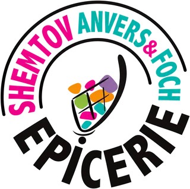
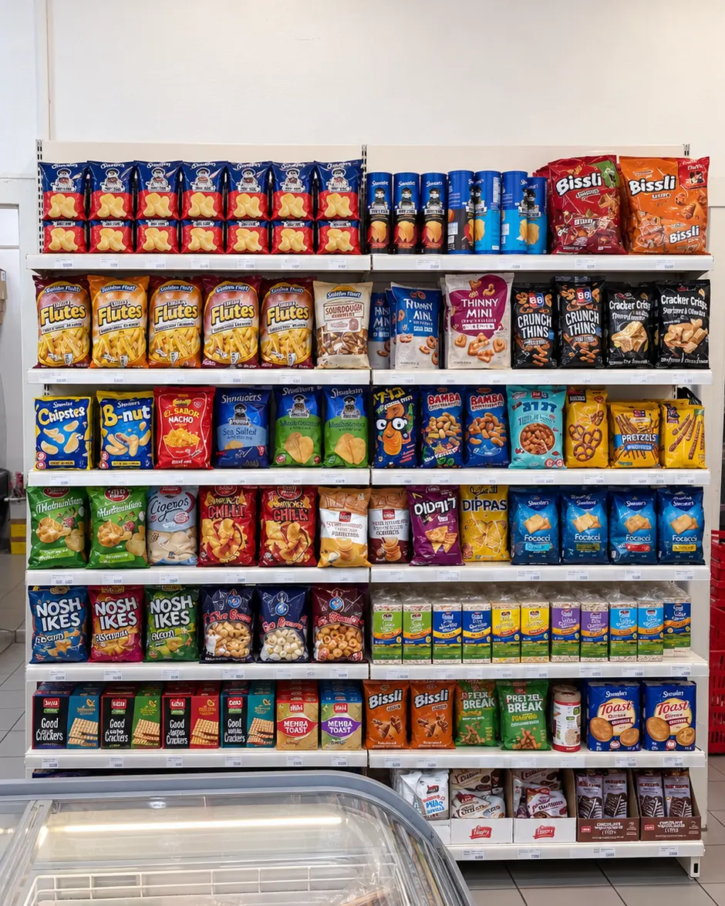
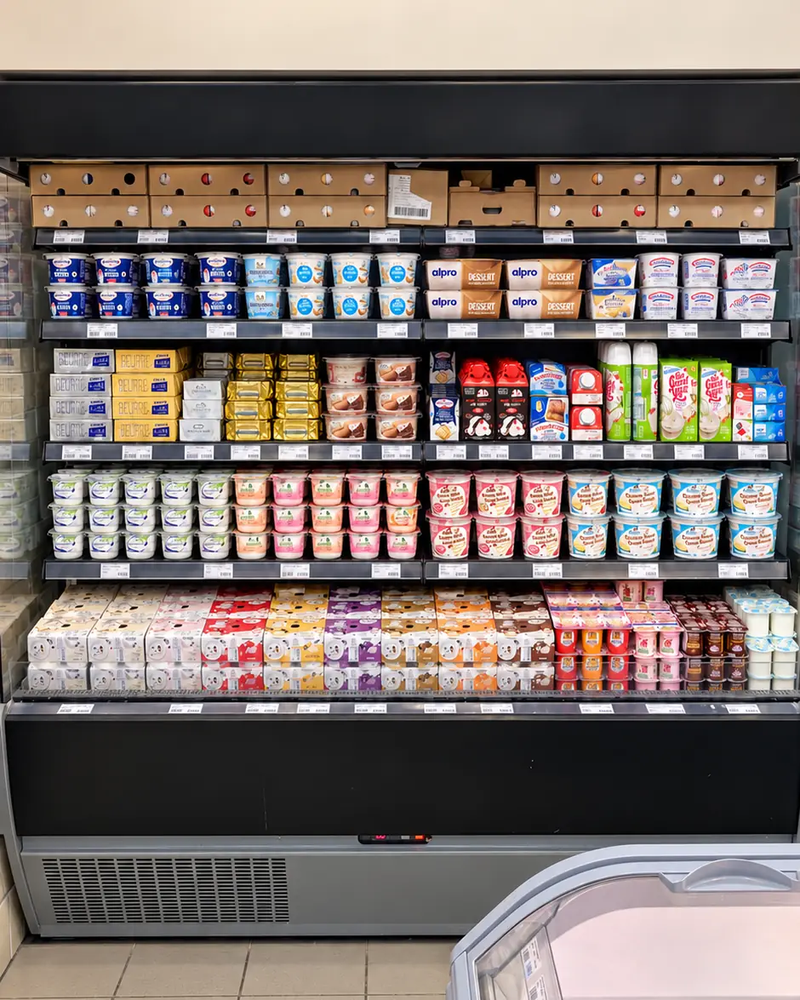
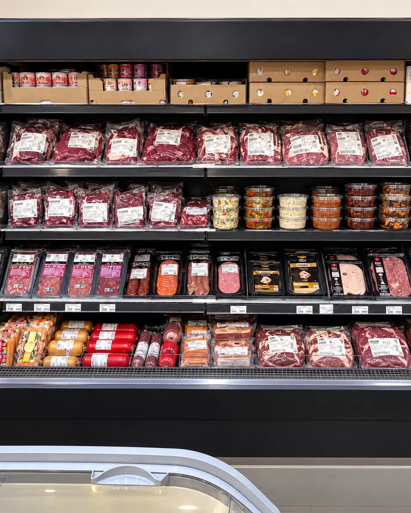
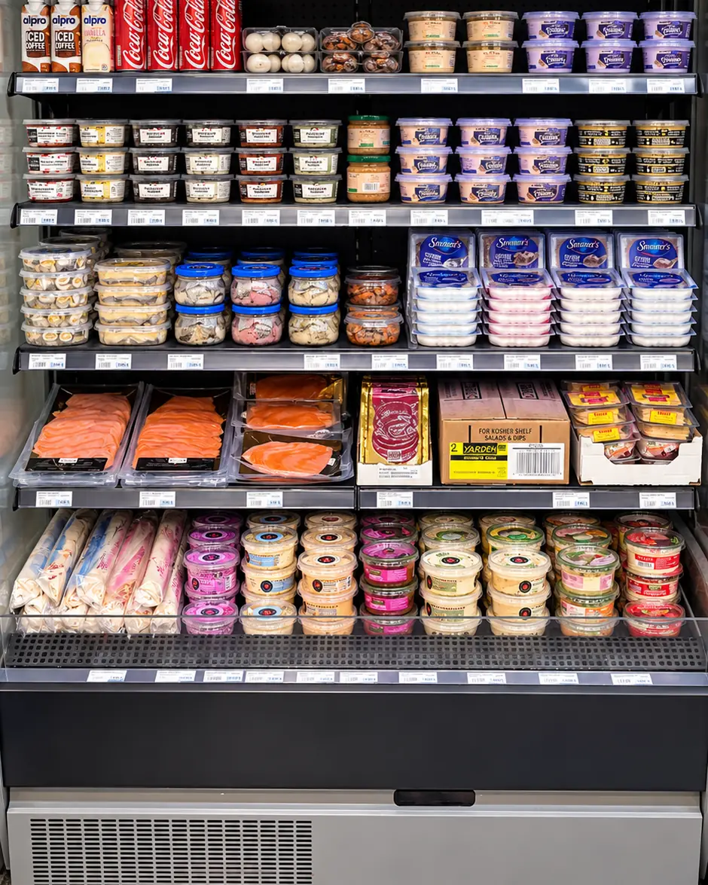
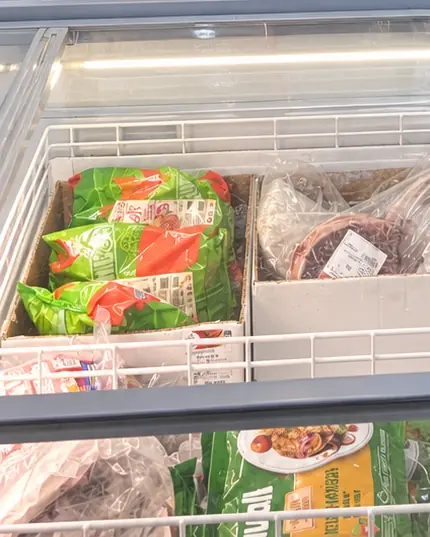
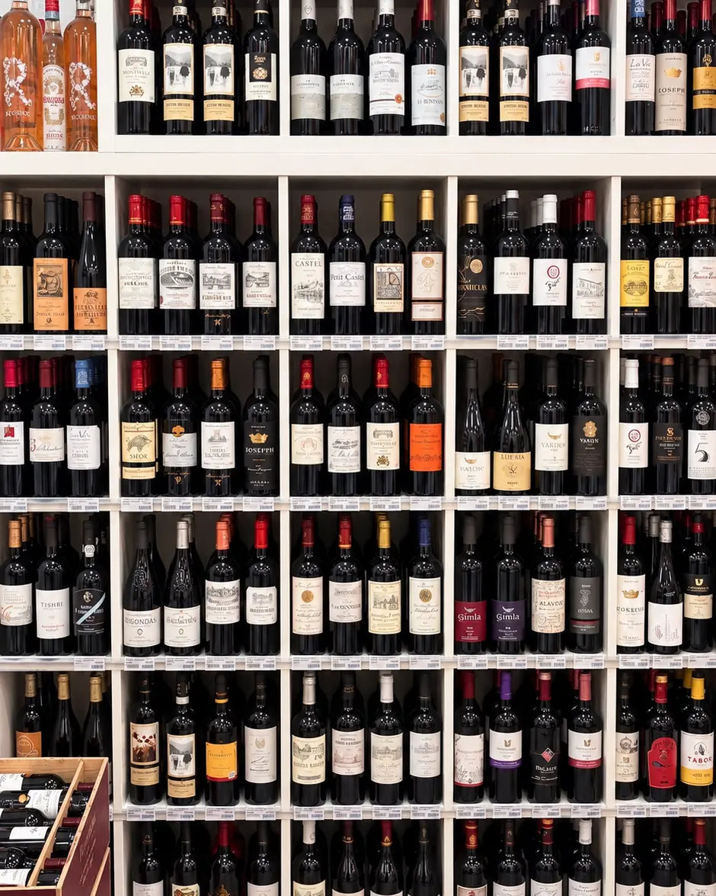
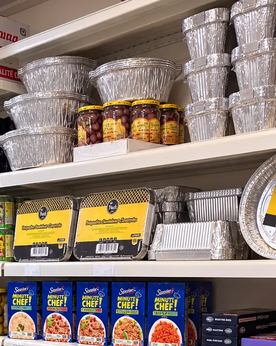

Shemtov Foch · Strasbourg
Votre épicerie casher au quotidien.
Au 6 rue du Maréchal-Foch, à Strasbourg : épicerie, produits frais, viandes, poissons, surgelés, boissons et vins. Pour la semaine, Chabbat et les fêtes.



-
Aujourd'hui
Voir les horaires
Tous les horaires -
Adresse
6 rue du Maréchal-Foch
Itinéraire (nouvel onglet)
67000 Strasbourg -
Téléphone
03 88 11 96 92
Appeler le magasin
Le magasin
Une épicerie de quartier, du quotidien jusqu'aux fêtes.
Shemtov Foch est une épicerie casher de proximité à Strasbourg. On y fait les courses de tous les jours : épicerie, crèmerie, viandes, poissons, surgelés, boissons et vins.
Avant Chabbat et les fêtes, on y trouve aussi de quoi préparer les repas et recevoir : barquettes, vaisselle et l'essentiel de l'épicerie.


- Épicerie casherRéférencée par le Consistoire Israélite du Bas-Rhin (nouvel onglet).
- Du frais aux vinsCrèmerie, viandes, poissons, surgelés, épicerie et boissons.
- En magasin uniquementPas de commande en ligne : les courses se font sur place.
- ActualitésSur la page Facebook Shemtov Strasbourg (nouvel onglet).
Nos rayons
Les rayons du magasin, en un coup d'œil.
Un aperçu de ce que vous trouverez en magasin. L'assortiment varie selon les arrivages.
-

Épicerie salée
Les bases de la cuisine du quotidien, des pâtes aux épices.
-

Épicerie sucrée
Chocolats, pâtes à tartiner, confitures et de quoi préparer les desserts.
-

Snacks
Chips, biscuits salés et crackers pour les petites faims.
-

Produits frais
Fromages, crèmerie et produits du quotidien, au frais.
-

Viandes et charcuterie
Viande et charcuterie au frais, bœuf et poulet surgelés.
-

Poissons
Saumon fumé, surimi et poissons panés.
-

Surgelés
Glaces, pizzas, légumes et frites, toujours à portée de main.
-

Boissons et vins
Sodas et boissons, vins casher et une sélection de spiritueux.
-

Recevoir et fêtes
Le nécessaire pour les repas de Chabbat et des fêtes.
Chabbat et fêtes
Préparer Chabbat et les fêtes.
Le magasin est fermé le samedi. Pendant les fêtes, les horaires changent : ils sont annoncés sur la page Infos pratiques dès qu'ils sont confirmés.
- 4décHanoukahDu soir du 4 au 12 décembre 2026
- 23janvTou biChvat23 janvier 2027
- 22marsPourimDu soir du 22 au 23 mars 2027
- 21avrPessahDu soir du 21 au 29 avril 2027
- 10juinChavouotDu soir du 10 au 12 juin 2027
- 1octRoch Hachana 5788Du soir du 1er au 3 octobre 2027
Infos pratiques
Venir chez Shemtov Foch.
Horaires
Horaires de la semaine
| Lundi | 8h – 20h |
|---|---|
| Mardi | 8h – 20h |
| Mercredi | 8h – 20h |
| Jeudi | 8h – 20h |
| Vendredi | 8h – 17h |
| Samedi | Fermé |
| Dimanche | 9h30 – 13h |